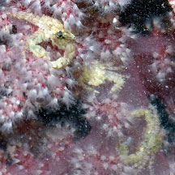
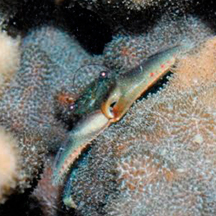

|
|
| porcelain crabs text index | photo index |
| Phylum Arthropoda > Subphylum Crustacea > Class Malacostraca > Order Decapoda > Anomurans > Family Porcellanidae |
| Commensal
porcelain crab awaiting identification* Family Porcellanidae updated Dec 2019 Where seen? This tiny porcelain crab is sometimes seen, on other animals such as hard and soft corals, as well as on seaweeds and coral rubble. Sometimes seen in groups of many animals. It is probably quite common but overlooked because it looks like bits of dirt! Features: Body width less than 1cm. Some have a hairy body and pincers. Others are smooth. Different species of porcelain crabs probably match this description. Species are difficult to positively identify without close examination. On this website, they are grouped by external features for convenience of display. The Painted porcelain crab (Porcellanella triloba) that lives in sea pens has a separate fact sheet. |
*Species are difficult to positively identify without close examination.
On this website, they are grouped by external features for convenience of display.
| Commensal porcelain crabs on Singapore shores |
On wildsingapore
flickr
|
| Other sightings on Singapore shores |
 On pink flowery soft coral. Pulau Ubin, Jul 24 Photo shared by Loh Kok Sheng on facebook. |
 On hard coral. Sisters Island, Dec 10 Photo shared by Loh Kok Sheng on his blog. |